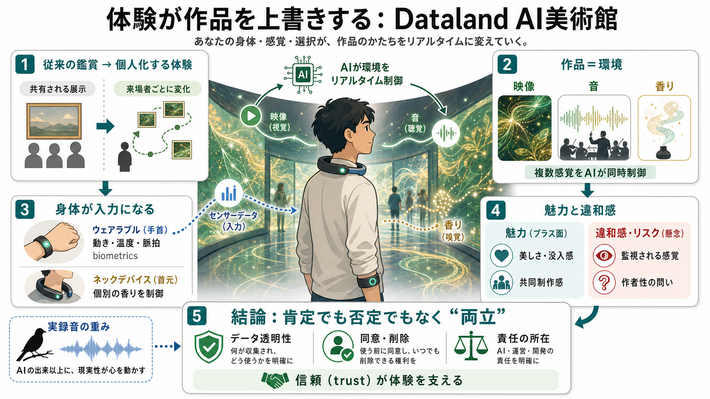

Inside DATALAND: What to Know About Refik Anadol’s AI Museum | Artsy
# Inside DATALAND: What to Know About Refik Anadol’s AI Museum. On June 20, 2026, DATALAND opened to the public at The G…

体験が作品を上書きする
生成AIが映像・音・香りを制御し、来場者の動きや生体反応まで反映して展示が“個別に変化”する体験型施設です。
「美しさ」と同時に「監視の違和感」も生まれる新しい問いを提示します。
鑑賞の場所から
通常は作品が来場者を待ちますが、ここでは逆に来場者が作品の進行を左右します。
空間の見え方が同じでも、体験は人ごとにズレます。
共有される展示体験
個人に最適化される体験
複数感覚を同時制御
展示は“AI熱帯雨林”のような映像と、オーケストラ的なサウンドスケープ、コオロギの鳴き声が重なって立ち上がります。
さらに香りと反応が加わり、空間全体がインターフェースになります。
緑・金色の模様が揺らぐ
複数の音が同時に鳴る
香りを“制御して配る”
2つのウェアラブル
来場者はリストバンドとU字型デバイスを装着します。
リストバンドが動き・温度・脈拍などを計測し、首のデバイスが香りの制御に関わるとされています。
動き／温度／脈拍など
香りのアルゴリズム制御
“来場者ごと”に変わる
香りが来場者ごとに異なるため、同じ部屋でも体験は個別化されます。
さらに画面に感情温度や心拍のような可視化がある描写が示されます。
嗅覚が人ごとに割り当てられる
自分の反応推移が“見える”
作品が“成長する”
作品は固定物ではなく、「まだ展開中の作品」として変化し得ます。
館内の反応系は、観客を“観測対象”にも“共同制作者”にも見せてしまいます。
あなたの反応が進行に影響
自分が監視されている感覚
賛否の軸が変わる
AIが自然界データを学習して表現を作る魅力はある一方、記事の筆者は「人間の直接性」がつながりにくい点を疑問視します。
つまり論点は“出来”から“誰の意図か”へ移ります。
自然＋テクノロジーの統合
意図・感情の直接性が弱い
“監視”が感情を奪う
センシングは体験の一部でもありますが、監視されているように感じる余地があります。
収集データの保存・利用目的・第三者提供・同意・削除などが不明だと、不安が残ります。
保存期間
利用目的
同意・削除
最も刺さった別ルート
筆者が最も心を動かされたのは、AI生成の展示ではなく、絶滅したハワイの鳥の“実録音”だったとされています。
表現の核が、AIの出来以上の場所にあることを示唆します。
魅力はあるが、意味の接続は人次第
喪失・現実の重みが直接届く
肯定でも否定でもない
DatalandはAIアートを決定的に肯定する話ではなく、美しさと不安、可能性と限界を同時に突きつける体験として描かれます。
次に必要なのは説明責任（責任の所在とデータ透明性）です。
多感覚同期で鑑賞体験を更新
データガバナンスと作者性の透明化
評価すべき観点
体験型AIは、体験品質だけでなく倫理・安全・法・プライバシーまで一緒に検討する必要があります。
記事の情報だけでは結論が確定しない点も、判断材料です。
評価可能性：音・香り・反応まで統合
批判性：作者性・意図の直接性
ボトルネック：同意・保存・安全基準
読み進めるために
※本デッキは、ユーザー提示の要約・記述に基づき圧縮しています。原文で詳細（データ取り扱い、同意フロー、制作責任）を確認してください。
# Inside DATALAND: What to Know About Refik Anadol’s AI Museum. On June 20, 2026, DATALAND opened to the public at The G…
# Inside Refik Anadol's Dataland, the world’s first AI art museum. ## An immersive “laboratory of imagination” from Anad…
Sign up for Instagram to stay in the loop. By continuing, you agree to Instagram's Terms of Use and Privacy Policy. Phot…
## Opening in Los Angeles June 20, 2026. Introducing DATALAND’s inaugural exhibition, *Machine Dreams: Rainforest*. DATA…
But will L.A. embrace the world’s first AI arts museum? An immersive AI art piece with flowers. Dataland, a 25,000-squar…